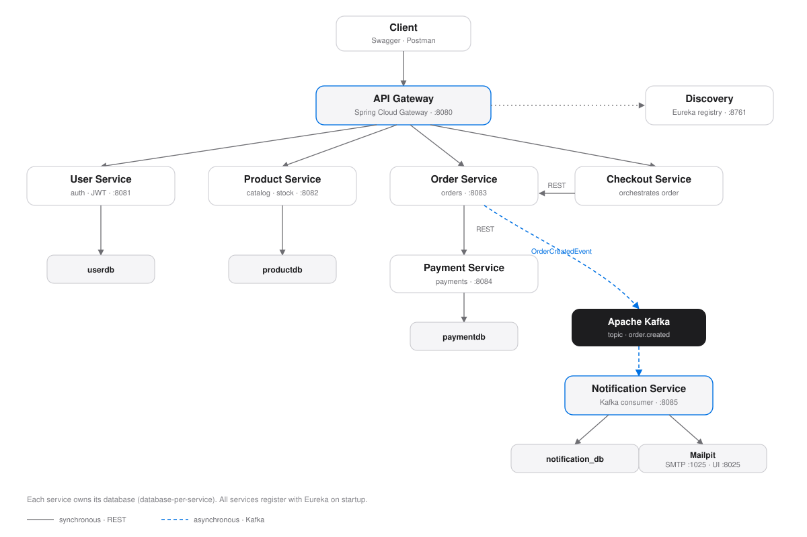

Rakesh Kuratti is a Java backend engineer in Bangalore who builds Spring Boot microservices and REST APIs for platforms that can't afford to go down — from Nokia's optical network stack to distributed order-processing systems.
Five years across telecom, banking, and pharma — always on the backend, always on Java.
CompletableFuture and ExecutorService.@ControllerAdvice, making API errors consistent and predictable.A self-directed e-commerce platform built to put microservices patterns into practice — service boundaries, event-driven communication, and independent deployability.
Seven independently deployable services — user, product, order, checkout, payment, notification, and a Eureka discovery server — fronted by a Spring Cloud Gateway. Order and payment talk over REST; order and notification talk over Kafka, so an email confirmation never blocks checkout.

Scroll sideways to see the full diagram →
The everyday toolkit behind the work above.
Java, SQL
Spring Boot, Spring Security, Spring Cloud Gateway, Spring Data JPA
Microservices, REST APIs, JWT authentication, API design
Apache Kafka, event-driven communication
Multithreading, ExecutorService, CompletableFuture
Hibernate, JPA, JDBC, MySQL, PostgreSQL
Git, Docker, Maven, Jira, Confluence
OOP, data structures & algorithms, system design, SOLID principles, design patterns
Open to Java backend and microservices roles. Based in Bangalore, available to start immediately.